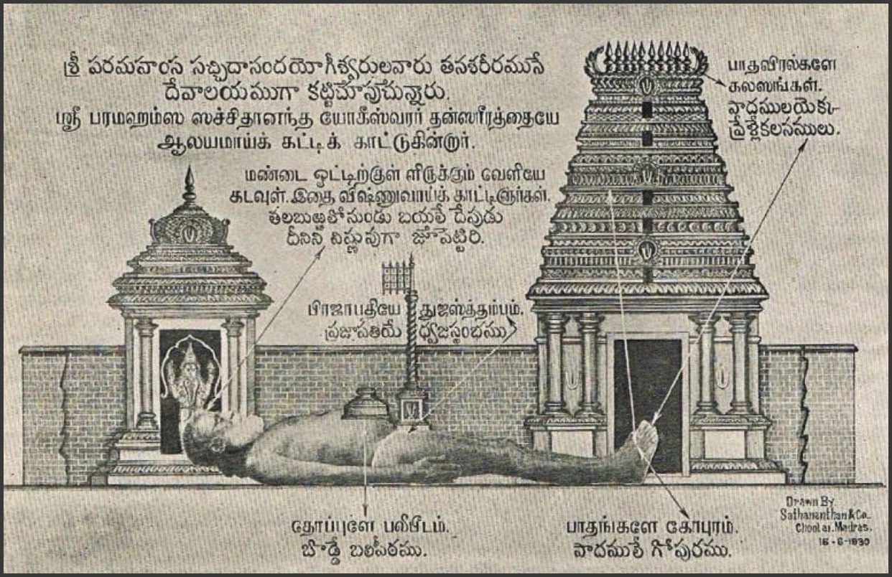
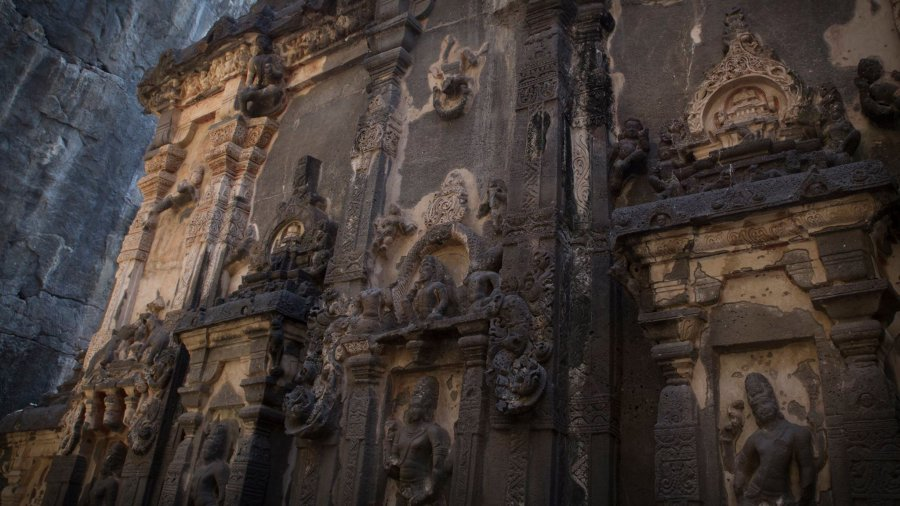

«Вастувидья — это наука о васту, т.е. наука об участках для строительства, домах, помещениях». (Также слово «васту» могло означать «достаток», «богатство».) Однако, обратившись к трактатам по вастувидье, читатели «не найдут в них специальной информации по архитектуре. Основная их часть посвящена религиозным обрядам, большинство которых совершается еще до начала строительства. <…> При этом в тексте приводится множество примет, связанных с судьбой будущих жителей дома. Большое внимание уделено и астрологическим вычислениям даты, наиболее благоприятной для начала работы. <…>
Древнейшие истоки вастувидьи можно видеть в таких ритуальных текстах, как брахманы (VIII–V вв. до н.э.), шульбасутры и грихьясутры (ок. V в. до н.э.), где есть упоминания о строительных ритуалах. Разделы о планировке домов и храмов входили и в астрологические трактаты, например в сочинение Варахамихиры «Брихатсамхита» (VI в. н.э.). Встречаются они и в тантрах, агамах и в других произведениях, в которых описываются обряды». <…>
Особенности вастувидьи «легче всего проследить на примере мандал (maṇḍala), создававшихся перед началом работ на месте строительства. Строительные мандалы не только гармонизировали пространство архитектурных сооружений, но и воплощали в себе представления о строении мироздания, человеческого общества и самого человека. Мандалы могли быть любой формы в зависимости от характера, размеров и назначения строящихся зданий или архитектурных комплексов. В пуранах же описываются только две квадратные мандалы, самые распространенные в индийской традиции. Наиболее древней являлась мандала мандука (maṇḍūka), которая представляла собой квадрат, состоящий из 64 пад, т.е. малых квадратов. <…> Основой другой мандалы — парамашайики (paramaśāyika) был квадрат, поделенный на 81 паду. Именно этой мандале в пуранах отдается явное предпочтение. <…> И в парамашайике, и в мандуке жрец мысленно размещал 45 божеств (среди них были и астрологические – прим. мое). В обеих мандалах изображалась фигура космического человека Пуруши, сидящего со сложенными ногами. Его голова оказывается на северо-востоке, ноги — на юго-западе, руки — на юго-востоке и северо-западе (ГП I.46.2).
<…> перед строительством здания «строилась» обширная «конструкция» жертвоприношения, в основном из подношений пищи. При этом обряде каждому из 45 богов соответствовала своя жертва и приносилась она на определенном месте васту. <…>
<…> Противопоставление квадратной и круглой форм в Индии возникло еще в древности: согласно ведийской системе алтарей, существовало два огненных алтаря: квадратный — на восточном конце жертвенной площадки и круглый — на западном. Квадратный (ахавания-агни) обозначал небесный мир и противопоставлялся круглому (гархапатья-агни), обозначавшему земной мир. В научной литературе отмечалась связь мандалы с лунным и солнечным календарями.
Основой квадратной формы алтарей являются стороны света, различение которых возможно благодаря движению солнца: восток (восход солнца), запад (заход солнца), юг и север. Это привносит в мир стабильность: «кардинальные точки, где поднимается и садится солнце, т.е. осуществляется контакт земли с небом, фиксируют землю. Земля, находящаяся в объятиях неба, удерживается в определенном положении, становится упорядоченной. Такая земля представляется четырехугольной. В „Ригведе“ она называется четырехточечной (чатуссракти) (Х.5.8.3)». Васту как место для жилья является такой упорядоченной, четырехугольной землей. Из двух используемых в строительстве мандал образу такой «четырехточечной» земли больше всего соответствует более древняя мандала мандука, состоящая из 64 квадратов, по восемь с каждой стороны. Она основана на числе «4». <…> Чаще всего именно эта мандала рекомендовалась для строительства храмов и даже противопоставлялась парамашайике, рекомендуемой для светского строительства. Четыре хранителя сторон света — локапалы организуют расположение всех 45 богов в мандале, они ответственны за основные направления: восток, запад, север, юг. Видимо, это и есть наиболее древнее ядро васту-мандалы. Расположение локапалов в мандале варьирует от источника к источнику. Неизменным остается только Яма — хранитель юга, стороны смерти. На востоке очень часто, например в «Агни-пуране», указывается Индра, на западе — Варуна, на севере — Кубера. А в «Артхашастре» (КА II.4.19) перечисляются такие локапалы: на севере — Брахма, на востоке — Индра, на юге — Яма, на западе — Сенапати (бог войны, сын Шивы). Есть три способа перечисления локапалов (а значит, и описания мандалы) слева направо: начиная с севера, начиная с северо-востока и начиная с востока. Известное описание идеального города в «Артхашастре» (КА II.4.6—15) начинается с севера. В исследуемых пуранах [«Матсья-», «Гаруда-», «Агни-» – прим. мое] восток считается самой благоприятной стороной света, и описание мандалы начинается с востока.
Ответственными за стороны света являются: на востоке — солнечное божество Сурья, или Рави; на юге — Яма; на западе — божество воды Варуна, или Джаладхипа (лишь в ГП — Ганадхипа, т.е. Ганеша, сын Шивы); на севере — Сома». И в «Матсья-», и в «Гаруда-» и в «Агни-пуране» в центре в четырех (в парамашике — в 9) квадратах располагается Брахма. «Считается, что 12 богов вокруг Брахмы это 12 Адитьев (сыновей богини Адити). Иногда они отождествляются с 12 солнечными месяцами. По внешней стороне размещаются 32 божества небесных тел (пададевы). <…>
Как уже говорилось, создание мандалы — не столько расчерчивание плана будущего здания, сколько способ освящения участка для строительства. Место же становится сакральным за счет того, что эта мандала — воплощение представлений о целостности, организованности пространства». Центральная часть мандал, где находится Брахма, «отсылает нас к одному из мифов о творении мира. В пуранах (например, в «Вишну-пуране») так называемое «первичное творение» трактуется как объединение различных элементов мира (пространства, воздуха, огня, земли, воды): «Объединившись один с другим в (единое) соединение, они, основываясь друг на друге, приобретают признак единого целого и достигают полного единства. По велению Пуруши и по милости предматерии от великого принципа творения и прочих... от наделенных различительными свойствами (первоэлементов) возникает яйцо Брахмы» (ВП I.2.51—52). Это яйцо было огромного размера и плавало по воде. Оно стало жилищем для Вишну, предстающего здесь в форме Брахмы. В этом яйце находятся «горы, континенты, океаны, планеты, миры, боги, асуры и люди. С внешней стороны яйцо окутано водой, огнем, воздухом, пространством, а также источником первоэлементов, первоэлементами, наделенными десятью качествами и великим принципом творения» (ВП I.2.56—57). Все эти представления воплощаются и в васту-мандале. Боги, расположенные вокруг Брахмы, являются одновременно и хранителями соответствующих участков, и персонификациями различных элементов и стихий: это Акаша (Пространство), Ваю (Ветер), Агни (Огонь), Апа (Вода), а также Бхригу (Земля). Здесь же мы находим и солнечных богов, таких как Сурья, Савитар и др., бога Луны Сому, а также представителей мира богов, асуров, предков, гандхарвов, нагов. Описания строительной мандалы, которые полностью соответствуют описанию яйца Брахмы, содержатся в более ранних произведениях: «Брихатпарашара-смрити» и «Брахмоктаяджнавалкья-самхите». Они были переведены и изучены А.М. Самозванцевым. В обоих памятниках строительная мандала описывается как мандала планет.
При этом планеты являются лишь частью яйца Брахмы со всеми его мирами, океанами и обитателями. Согласно «Брихатпарашара-смрити», в квадратной мандале следует поместить следующие светила: Бхаскару (Солнце) — в середине, Шаши (Луну) — на юго-востоке, на юге — Дхарасуну (Марс), на северо-востоке — Будху (Меркурий), на севере — Сурачарью (Юпитер), на востоке — Бхригунандану, на западе — Шани (Сатурн), на юго-западе — Раху, на северо-западе — Кету (Брихат. XI.52—54). Эти планеты вместе с локапалами считаются охранителями сторон света. В «Брахмоктаяджнавалкья-самхите» также предлагается разместить девять планет и хранителей мира. Их изображения или знаки либо изготовляются (для каждого используется свой материал), либо рисуются (для каждого — свой цвет). А.М. Самозванцев отмечает, что в соответствии с версиями текстов ЯС I.297 и Брихат. XI.55—57 «материальные „двойники" планет изготовлялись: Солнца — из меди, Луны — из горного хрусталя, Марса — из красного сандала, Меркурия и Юпитера из — золота (возможно, из позолоченной меди, свинца и пр.), Венеры — из серебра, Сатурна — из железа, демона затмения Раху — из свинца и метеора Кету — из латуни». Кроме этого, могли изготовляться изображения планет на металлических пластинах и деревянных дощечках. Кроме описанных выше мандал в «Брахмоктаяджнавалкья-самхите» рекомендуется и следующая: «В середине [мандалы] следует поместить четыре веды, а равно [знаки] зодиакальных созвездий, за ними следует расположить созвездия и далее — расположить звезды, „Гаятри“, оперенную желанием. И в каждом созвездии — [звезду, которая] сильнее [прочих]. А лунные стоянки и светила требуется почтить записью мантры» (Брахм. Х.107—108).
В «Брахмоктаяджнавалкья-самхите» дается также описание расположения богов и мифологических персонажей, включенных в мандалу для строительства. Однако эта мандала организована иначе, чем описанные в пуранах, и в ней другое количество божеств. <…> Это описание мандалы, связанной со строительством, можно соотнести с текстом, в котором дается традиционное описание рождения человека. Примером такого текста является 22-я глава «Гаруда-пураны» (ГП II.22), большую часть главы составляет описание тела человека, в основе которого лежит образ яйца Брахмы (brahmāṇḍa): тело предстает перед нами как соединение пяти элементов, континентов, морей, гор, рек, планет и других миров. При этом текст строится в виде последовательного описания тела человека как мандал перечисленных явлений. Одна мандала — это мандала миров, спроецированная на тело. Ноги изображаются как мандала адов: начиная с мира Тала, соответствующего подошвам ног, и кончая адом Патала в ягодицах. Остов человека образуют три мира: мир земли в области пупа, выше — мир атмосферы и в сердце — небесный мир. Над ними находятся четыре высших мира: от Махарлоки до Сатьялоки. <…> Человеческое тело, как и в строительных мандалах, представляется как своеобразная звездная карта. При этом небесные объекты ассоциируются с чакрами, энергетическими центрами: «В чакре нада (nada) находится Солнце, в чакре бинду (bindu) — Луна, Марс — в глазах, Меркурий — в сердце... Юпитер — в месте, где находится Вишну, [в пупе]... Раху — во рту. Так всегда учили. Кету находится в ступнях. [Такова] мандала светил в теле» (ГП II.22.63—65). Таким образом, светила соотносятся с энергетическими центрами тела — микрокосмоса, заключенного в человеке. Если, следуя логике средневековых текстов, спроецировать мандалу на макрокосмос, то основные светила представляются как энергетические центры огромного надмирного существа.

Боги, а вернее обозначения богов, также оказываются привязанными к определенным местам в квадрате-человеке. Например, в «Матсья-пуране», в описаниии мандалы парамашайики, каждый раз указывается, какое божество какой части тела соответствует: «На голове обозначается Агни, на месте рта находится Апа. Притхвидхара и Арьяман оба находятся по двум [сторонам] груди. На грудине мудрые должны почитать Апаватсу. На месте глаз [находятся] Дити и Парджанья, на ушах — Адити и Джаянта. Сарпа, Индра — на плечах, Сурья, Сома и другие, [всего] по пять [с каждой стороны], — на предплечьях. Рудра, Раджаякшма находятся на левой руке [от локтя до кисти]. Савитра и Савитар — на правой руке. Вивасвант, а также Митра размещаются на животе. <…> В центре в девяти падах — Брахма. Он почитается в сердце» (МП 253.39—46). Таким образом, тело Пуруши (тело Храма) уподобляется мандале божеств, состоящей из пад и сориентированной по сторонам света. Существуют изображения мандалы, куда вписаны не имена богов, а названия частей тела Пуруши. Все это необходимо для освящения места для Храма. Такое распределение божеств может быть соотнесено с существующей в практике индуизма процедурой ритуального очищения тела человека — ньясой, включающей чтение мантр и мысленное расположение богов и священных слогов соответственно частям тела. Этот обряд использовался и для лечения, и при очистительных церемониях перед совершением важных обрядов».
В пуруша-мандале совмещается по крайней мере три мифа, связанных с творением Вселенной: о Бхуте, о Пуруше и о яйце Брахмы. «Присутствие в одном обряде нескольких уровней толкования — явление весьма распространенное в Индии. Отчасти оно возникло из особенностей индийских текстов, которые создавались как компиляции. При этом составители стремились всесторонне осветить предмет, привлекая материал из текстов разного времени и назначения. В ритуале также могли комбинироваться похожие обряды. Такое стремление как можно полнее осветить материал имеет объяснение и с точки зрения мировоззрения. То, что охватывает больше всего явлений, считалось наиболее сакральным. Возможность все охватить, заключить в себя — это неотъемлемая черта высшего божества — Вишну, Шивы или Брахмы.
Мы видим, что строительные мандалы могут прочитываться и как тело, и как космос и пространство, и как время, которое связывалось с движением солнца и планет. <…>
Возможность прочитать мандалу различными способами говорит о ее высочайшем статусе. В пуранах освещены далеко не все способы прочтения васту-мандалы». Об альтернативных способах ее организации писала К. Ватсьяян: ««В каждом квадрате скрыто также изображение лотоса. Четыре квадрата в углах... имеют по четыре лепестка, другие по восемь. Центральный квадрат — это космическое тело Вишну, т.е. Вишварупа. Каждое внутреннее ограждение содержит в себе также свой слог (матрику), относящийся к руководящему божеству. Начало размещения слогов, или знаков алфавита санскрита, — в северо-восточном углу второго внутреннего пояса из 24 квадратов и конец — в центральном квадрате. Таким образом, если рассматривать по часовой стрелке, можно прочесть все 49 слоговых знаков алфавита». Лотосы, которые предлагается расположить в мандале, так же как и все вышеописанные образы, имеют отношение к мифу о творении мира. Иногда лотос называют яйцом Брахмы. Говоря о лотосовой розетке, В.В. Вертоградова пишет: «В индийской мифологической традиции лотос связывается с творением мира из космических вод. Он есть результат творения, сотворенный космос. Центр розетки есть центр (пуп, ось) вселенной. Согласно Атхарваведе (АВ Х.7, 41) — „золотой штырь, стоящий посреди вод“ (скр. vetasam hiraṇyayam tiṣṭhantarn salile). Восемь лепестков розетки соответствуют восьми направлениям (основным и промежуточным), которые структурируют пространство». Кроме того, в индийской культуре цветок лотоса считается символом чистоты, так как он рождается в болотной воде, но появляется на свет незапятнанным и прекрасным. Сам лотос часто выступает в качестве мандалы: пространство внутри него чисто и священно, на нем изображают богов и священные слоги. Слоги же санскритского алфавита, особенно священные, называют bījāḥ, т.е. «семена». Таким образом, они также имеют отношение к зарождению новой жизни. <…>
Функции богов мандалы часто подсказывают, какого рода помещения следует строить в соответствующих частях здания. Пураны предлагают на северо-востоке, как на самом благоприятном направлении, делать «дом умиротворения» (śāntigṛha) — комнату для совершения умиротворяющих обрядов для предотвращения несчастий, и «дом богов» (devatāgāra) — комнату для почитания богов (МП 256.33), комнату для хранения благовоний и цветов (ГП I.46.14). На востоке — помещение для жертвоприношений (ГП I.46.13). На стороне Агни, т.е. Огня (юго-востоке), должна быть кухня (МП 256.34). В ГП есть уточнение: на кухне должно быть два вентиляционных отверстия, куда может пролезть обезьянка (ГП I.46.13). «Гаруда-пурана» рекомендует делать помещение для воды на западе, т.е. на стороне владыки вод Варуны. В «Матсья-пуране» благоприятной стороной для хранилища воды считается север, где помещается Сома — бог Луны, олицетворяющий напиток богов (сому) (МП 256.34). В «Гаруда-пуране» же на севере рекомендуется строить кладовку (ГП I.46.14). На этом направлении часто помещается Кубера, хранитель сокровищ. По «Матсья-пуране», «на стороне Ниррити (юго-западе) мудрый должен хранить домашнюю утварь. Бойня должна быть сделана снаружи, а также навес для омовения (snānamaṇḍapa), зерно и деньги [должны храниться] на стороне Ваю (северо-западе), помещение для работы — снаружи» (МП 256.34—35). Подобные рекомендации касаются и расположения опорных столбов, и дверей, и пристроек. Заканчиваются все указания словами: «Вот с такими особенностями [должен строиться] дом, [чтобы] он приносил счастье домохозяину» (МП 256.35). <…>
Трактат по вастувидье из «Матсья-пураны» (Гл. 252—270)
Глава 253
Сута сказал:
1. «Далее я расскажу об определении времени для [строительства] зданий. Следует всегда начинать строительство, [прежде] узнав благоприятное время.
2. Заболеет тот, кто будет строить дом [в месяце] чайтра. [Если человек будет строить] в месяце вайшакха, то он получит коров и драгоценности, если в месяце джъайштха — то умрет.
3. Если в [месяце] ашадха — получит слуг, сокровища и скот. Если в [месяце] шравана — будет иметь слуг, если в [месяце] бхадрапада — [будет иметь] убыток.
4. Если [будет строить в месяце] ашвина — [у него] умрет жена. Если в [месяце] карттика — [получит] благосостояние. В [месяце] маргаширша — пищу. В [месяце] пауша — [будет] бояться воров.
5. Если в [месяце] магха — [у него] будет множество приобретений, [однако это] предопределит и [опасность] от огня. Если в [месяце] пхалгуна — [получит] золото и сыновей. Такова по преданию власть времени.
6. [Следующие] лунные дома рекомендуются для строительства: Ашивини, Рохини, Мула, три [накшатры, в название которых входит слово] Уттара, Свати, Хаста, Анурадха.
7. Любые дни недели, за исключением воскресенья[1] и вторника, благоприятны [для строительства]. Неблагоприятны [следующие] йоги: Въягхата, Шула, Въятипата, Атиганда.
8—9. Следует строить в [йоги] Вишкамбха, Ганда, Паригха и Ваджра. Здания возводят в [следующие благоприятные] мухурты: Швета, Майтра, Махендра, Гандхарва, Абхиджити, Рохина, Вайраджа и Савитра. Взяв силу Луны и Солнц[2] следует рассмотреть благоприятные лагны. <…>
Глава 257
Сута сказал:
1. «Теперь я расскажу о замечательных [правилах] заготовки древесины [для строительства]. [Когда наблюдается влияние] пяти созвездий, начиная с Дхаништхи, не следует делать вишти[3] и последующие [действия].
2. Знающий должен в день, указанный астрологом, пойти в лес. Всегда сначала он должен [почтить] дерево, совершив пуджу и [приношение] бали. <…>
Глава 264
<…> 3. Установление [изображений] всех богов приносит благо, если совершается в месяцы чайтра, пхалгуна, джъайштха, мадхава (или вайшакха) и магха.
4—5. Когда пройдет сезон движения солнца к югу (т.е. после периода зимнего солнцестояния), в текущую светлую благоприятную половину месяца наиболее благоприятны пятый [день], второй, а также седьмой, десятый, день полнолуния, а также тринадцатый — установление [изображения] в эти [дни] наиболее благотворно.
6—7. Для установления [статуи] и других [обрядов] рекомендуются [следующие накшатры]: обе Ашадхи, Мула, в обеих накшатрах, в название которых входит слово Уттара, Джьештха, Шравана, Рохини, Пурвабхадрапада, Хаста, Ашвини, Ревати , Пушъя , Мригаширас, Анурадха, Свати.
8. Три планеты благоприятны — Буддха, Брихаспати и Шукра, а также накшатры и лагны, которые [находятся] под их влиянием.
9. Под влиянием [благоприятных] звезд и планет, совершив обряд почитания планет, следуя хорошим приметам, отказываясь [от дальнейших действий, если происходит нечто] непредвиденное,
10. в благоприятную йогу, в благоприятном месте, если лагна и рикша[4] свободны [от влияния] неблагоприятных созвездий, следует совершать замечательный [обряд] установления и другие [ритуальные действия].
11. Согласно предписанному ритуалу [статую] следует устанавливать во время айяны[5], вишувы[6], шадашатимукхи[7].
12. Мудрый в мухурту Праджапатья производит укладывание [статуи], в [мухурту] Швета — поднимание, в [мухурту] Бахъя[8] — установление. <…>
Трактат по вастувидье из «Гаруда-пураны» (кн. I, гл. 46—48)
Глава 46
<…> 29. Для [человека, рожденного под знаком зодиака] Синха, Канъя и Тула, главную дверь благоприятно делать на севере. Для людей, рожденных [под знаком зодиака] Вришчика, и других — дверь на востоке, юге и западе».
[1] Воскресенье — в тексте: āditya — «[день] под влиянием Адити».
[2] Взяв силу Луны и Солнца... — в тексте: ...candrādityabalaṁ labdhvā.
[3] Тяжелая подневольная работа.
[4] Рикша (ṛkṣa) — 12-я часть эклиптики.
[5] Айяна (ауаnа) — «солнцестояние».
[6] Вишува (viṣuva) — «равноденствие».
[7] Шадашатимукха (ṣaḍaśītimukha) — время, когда солнце входит в четыре знака: Рыбы, Близнецов, Девы, Стрельца.
[8] Бахья (bāhya) — букв, «внешний». Видимо, опечатка. Должно быть «Брахма», brāhma (Matsyapurāṇa. Poona, 1907). Название мухурты.
Е.В. Тюлина "Храм, мир, текст: вастувидья в традиции пуран"

- Омкарнатх
- (Осинская Ольга)
- +7 (926) 050 0785
- omkarnath@9planets.ru
- 9planets@mail.ru
Записаться
Cтатьи
-

«Кали» Рукмини Бхаи Наир
В 1990 году это стихотворение получило первую премию на Втором Всеиндийском поэтическом конкурсе и рассматривается критиками как жемчужина современной индийской поэзии.
-

Лайфхак для затмений: 6 осей зодиака
Трактовать затмения в личных целях – легко! Вы можете сами определять важнейшие потенциальные проблемы и ставить задачи по их предупреждению. Надо всего лишь… запомнить ключевые характеристики осей зодиака. А теперь по порядку)
Приложения